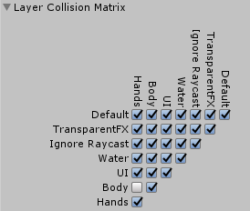

Building a Custom VR Rig¶
This article discusses the basics of adding the Leap Motion components to a rig to add hand tracking. Unless you are adding Leap Motion hand tracking to scene that already has a fairly complex VR camera rig, we recommend starting with the LMHeadMountedRig prefab. Realize that there is no way we can anticipate or support every possible variation of camera rigs, so expect that you must make some variation to the setup described here.
The scripts that need to be added to game objects in the camera rig include:
- LeapVRCameraControl
- EnableDepthBuffer
- LeapVRTemporalWarping
As well as the following prefabs:
- LeapHandController
- Hand model prefabs
Adding Hand Tracking to an Existing Rig¶
To illustrate the process of adding hand tracking to an existing camera rig, this discussion starts with the RigidBodyFPSController from the Unity Standard Assets.
Your single-camera rig setup should be similar to the above when finished.
Starting with a scene containing the RigidBodyFPSController:
Add an empty game object to the top level game object in the rig hierarchy, RigidBodyFPSController. Name the new game object: TrackingAnchor.
Drag the MainCamera onto the TrackingAnchor object you just created.
If the MainCamera object has any non-zero position or rotation values, copy these values to the TrackingAnchor object and set all the MainCamera position and rotation coordinates to zero.
Add the following script components to MainCamera:
- LeapVRCameraControl
- EnableDepthBuffer
You may also want to adjust the Near Clipping Planes property to its smallest value. Hands tend to be closer than other objects in a scene.
Create an empty game object as a child of MainCamera. Name it: LeapSpace.
Add the LeapVRTemporalWarping script component to the LeapSpace component you just created. Double check that the Head Transform property has been set to your MainCamera and that TrackingAnchor has been set to the TrackingAnchor game object you created a few steps earlier. Apply the following settings to the script:
- Set Tween Rotational Warping to 1.
- Set Sync Mode to LOW_LATENCY.
Drag the LeapHandController prefab to the hierarchy as a child of your LeapSpace game object. Apply the following settings:
- Set Rotation to [-90, 180, 0].
- Enable Is Head Mounted.
- Drag the LeapSpace game object to the Temporal Warping property.
Add the desired hand models to the LeapHandController. When adding the hand models, you have two options. You can either use prefabs dragged directly to the model pool, or you can first create instances of the hand models in the scene first, and then add them to the model pool. The only difference is that it is often easier to add additional scripts and other components to the hands or make other instance-level settings when you start with game object instances.
a. Create an empty game object as a child of your TrackingAnchor object. Name this game object: HandModels. a. If using instances, drag your desired hand model prefabs to this object. b. In the LeapHandController game object, locate the Hand Pool component. d. Drag HandModels to the Hand Pool Models Parent property. c. Open the Model Pool, if necessary, and set the Size property equal to the number of different hand models you are using. For example, set size = 1, if you are using just a single pair of graphics models; set size = 2 if you are using both graphics and physics models; set size = 3, if you are using graphics, physics, and attachment models; and so on. d. Drag the models that you are using to the slots in the model pool. Each element in the pool must have both a left and a right hand. e. Assign a Group Name, if desired. This name can be used in scripts to turn a pair of hand models on or off. f. Set Is Enabled to true. g. Set Can Duplicate as desired. If enabled, two instances of a hand can appear in a scene if two real hands of that type are in view, or if the Leap Motion software misidentifies a left hand as a right, or vice versa, when there are two hands in view.
Apply Layer and Physics settings to prevent collisions between the character controller and the hands (only necessary if you are using a character controller that has its own Rigidbody components).
- Create a Layer named “Body”.
- Assign any controller components that contain rigid bodies to the Body layer – but do not include the Leap Motion physics hands.
- Create a Layer named “Hands”.
- Assign the physics hand model prefabs or instances that you are using to the Hands layer.
- In the Unity Physics inspector (Edit>Project Settings>Physics), set the Layer Collision Matrix such that the Body and Hands layers do not collide.
Preventing the hands from colliding with the character controller.
Two Camera Setups¶
If your starting rig uses a two-camera VR setup, i.e. a separate camera for each eye, make the following additions to the above procedure:
- Follow the above procedure, using one of your eye-specific cameras in place of the MainCamera game object.
- On the LeapVRCameraControl component added to that camera object, change the Order Type property to LEFT or RIGHT to match the Camera Target Eye property.
- Move the other camera object in the rig to be a child of the TrackingAnchor object.
- Add the LeapVRCameraControl and EnableDepthBuffer script components to the second camera.
- Set the second LeapVRCameraControl Order Type property to match the setting of its Camera’s Target Eye property.
The two-camera rig setup.
Building a rig from scratch¶
The above procedure works for building a rig from the ground up – the TrackingAnchor becomes the root object of the rig. Still, you can save yourself some trouble by starting with the LMHeadMountedRig prefab.
Building an AR Camera Rig¶
The Augmented Reality (AR) features in our assets are provided for developer experimentation only. We don’t guarantee that these features will remain in future releases or be improved to a level of quality suitable for commercial products.
Follow the procedures above to create a two-camera rig. Then make the following additional changes:
- Add a Quad primitive to the LeapSpace game object.
- Remove the Mesh Collider component.
- Set the position to [0, 0, .1].
- Assign the LeapMotion/Assets/Materials/Passthrough/Background material to the Mesh Renderer’s Materials array.
- Set other rendering properties to off or disabled.
- Add the LeapImageRetriever script component to the rig.
- Drag the LeapHandController to the image retriever’s Provider property.
- Set the camera Clear Flags on both cameras to Solid Color.
- Enable the Override Eye Position property of both Leap VR Camera Control components.
- On the LeapSpace, Leap VR Temporal Warping component, set the Tween Image Warping property to 1.